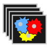
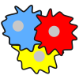
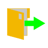
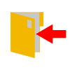

The User Interface¶
Overview of the MIA user interface, consisting of the Image View, the Control Panel and the Status Bar¶
The MIA user interface is divided in 3 areas:
The Image View¶
The Image View is the main interaction for viewing, zooming and labelling the currently displayed image. Whenever you select an image tool (see Tools) you can interact with the image depending on the selected tool.
You always have the option to use the drag tool  . By using the drag tool you can use the mouse scroll_wheel or + and - to zoom and press and hold the left_mouse or arrow_keys to drag the field of view.
. By using the drag tool you can use the mouse scroll_wheel or + and - to zoom and press and hold the left_mouse or arrow_keys to drag the field of view.
Tip
Whenever you have selected a specific tool, you can press the Spacebar and the drag tool is selected. When pressing spacebar again, the previous tool is selected.
Note
The Image View is based on the pixel resolution of the currently loaded image. All displayed labels and numbers are pixel-precise and are not rendered. For images with lower resolution the appearance of the labels might be unsatisfactory but it is important to have an exact control which pixels are labelled.
The Control Panel¶
The Control Panel is the main access point to the tools and functions of MIA. In the following the functions in the control panel are described as appearing in the panel from top to bottom.
Settings¶
By pressing  Settings the settings window is opened to adjust the global settings of MIA (see Settings)
Settings the settings window is opened to adjust the global settings of MIA (see Settings)
Applications¶
Choose the application that you want to solve with MIA¶
The first step on every project should be to select the target application. Currently supported are Classification, Segmentation and Object Detection. Every applications has different tools, features and training options.
Train and Test Folder¶
MIA uses 2 different image sets: a training folder and a prediction folder. The training folder is used to label data as input fo the training of the neural network. In the test folder should be the data that you want to predict with the trained model. Press the button button to open a folder either for training or testing. Predictions can only performed in the test folder and training will only be performed with data in the training folder. You do not have to set both folders upfront, the folders can be changed at any time.
{kind=link}
Note
By default the training folder uses subfolders as additional input for the model training. So folders, e.g. from different experiments, can be combined as training data. In opposite the test folder only uses the top level folder for its prediction. If you want to predict multiple folders, please change the test directory between predictions.
You can switch between training folder by pressing on the corresponding folder path. The currently selected folder is shown in bold.
File explorer for training and test folder¶
After setting the train or test folder an explorer strucure opens below. You can use the explorer to navigate through your image data. When pressing on an image in the explorer, the selected image is displayed in the Image View. Additionally, with the Image Navigation it is possible to navigate through the images ony by one.
Tools¶
Different tools can be selected to label the current image.
Tools for labellung the current image¶
Whenever you select a tool and pressing with the mouse inside the image view the image is labelled according to the currently selected tool. Each application has its unique tools, see Classification, Segmentation or Object Detection for details about each tool. When a tool is selected its name is shown in the The Status Bar.
Image Buttons¶
Image Buttons¶
Press the  Undo button or ctrl+z to undo the last drawing action.
Undo button or ctrl+z to undo the last drawing action.
Press the Clear Image button to reset the current image and delete all labels.
{kind=link}
Model Buttons¶
Model Buttons¶
The model buttons offer the interaction for training, prediction, saving, loading a deep learning model.
Press the  Train Model button to open the training dialog for training a deep learning model (see Training).
Train Model button to open the training dialog for training a deep learning model (see Training).
Press the Reset Model button to delete the currently trained/loaded model. Be sure to save the model if you want reuse the model before resetting.
Press the  Predict All button to predict all images in the test folder or the  Predict button to predict the current image (see Prediction for details) with the current model.
{kind=link}
{kind=link}
Press the  Load Model button to load a saved deep learning model.
{kind=link}
Press the  Save Model button to save the currently trained model.
{kind=link}
Note
The model training parameter are saved and loaded with the model. Be careful when loading a model and changing model training parameter (such as preprocessing), as the model will likely fail without retraining to predict as training and prediction parameter are no longer matching.
Classes¶
The Classes Menu¶
The classes menu can be used to edit classes. The different classes are used for separation of different object types. With the + and - buttons, classes can be added or removed. By pressing the button left to the class or buttons 0-9 that class is selected as the currently active class. Whenever a structure is labelled, it will get the label of the currently active class. By pressing the color of the class, a color menu is shown to edit the class color. By pressing in the name of the class, its name can be changed. The number to the right of the class name indicates the number of objects of this class.
Results and Posprocessing¶
Results and Postprocessing¶
By pressing the  Postprocessing button the postprocessing window is opened (see Post Processing).
Postprocessing button the postprocessing window is opened (see Post Processing).
Press the Results button to open the results window (see Results).
{kind=link}
Brightness and Contrast¶
Brightness and Contrast Slider¶
By changing the Brightness and Contrast sliders, the brightness or contrast of the currently displayed image is changed, accordingly. The effect happens after releasing the button. When the next image is selected, brightness and contrast are reset.
{kind=link}
{kind=link}
The Status Bar¶
In the status bar you find important information of the current progress and status of the MIA software.
The Status Bar is divided in three parts: the current image, the progress bar and the status message¶
On the left part of the status bar is shown the current image and the number of images that are in the current selected folder. Whenever a longer calculation is performed a progress bar is shown that shows the progress of the calculation. The status message shows imaportant messages such as the currently selected tool or when a process is finished.